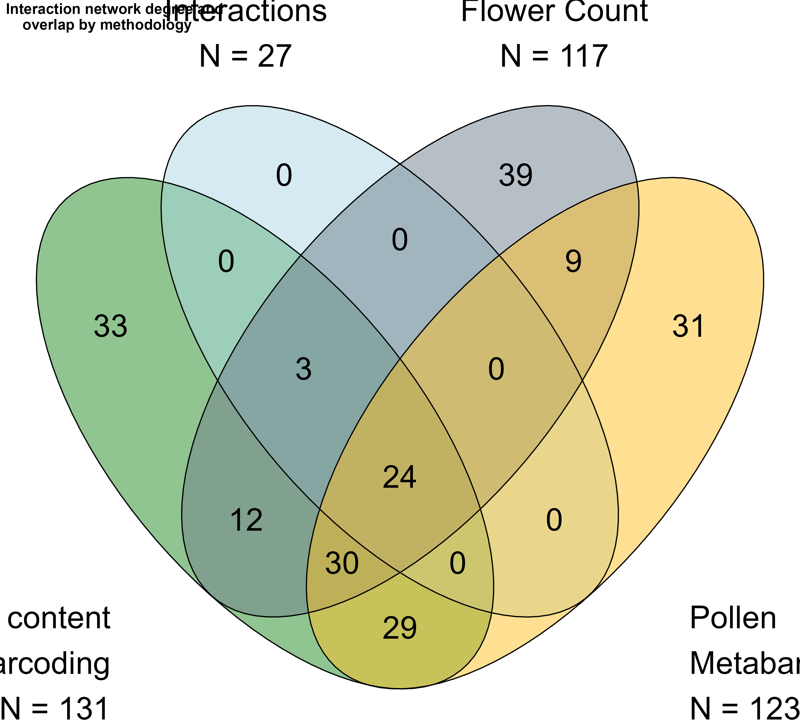
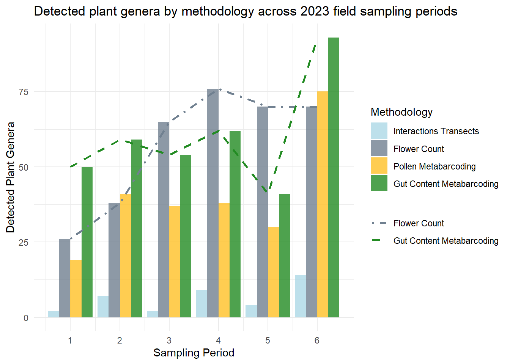
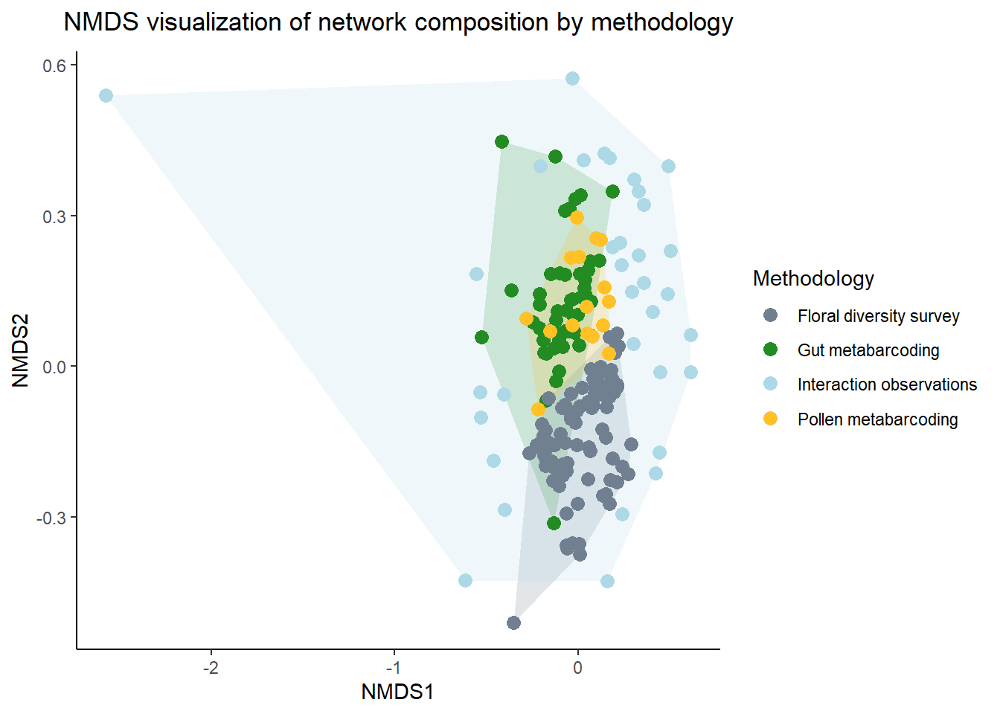

Interaction methodologies
Introduction
The global importance and threatened loss of pollination as a critical ecosystem service is clear within the existing research on pollinator communities (Klein et al. 2006) (Vanbergen & Insect Pollinators Initiative 2013). Our understanding of this topic is incomplete, however, given that historically the methodological approach to studying plant-pollinator interactions has been biased towards the plant side of the interaction (Evans & Kitson 2020) (Bosch et al. 2009). Pollination maintains plant community biodiversity, which is essential to ecosystem functioning (Ollerton 2017) across global ecosystems and agroecosystems. Pollinators critically support the reproduction of 94% of wild flowering plants and 75% of crop species (Vanbergen & Insect Pollinators Initiative 2013), contributing to 35% of global food production (Klein et al. 2006). The well established relationship between pollinator diversity and the productivity of plant communities (Artamendi et al. 2025) (Woodcock et al. 2019) (Katumo et al. 2022) lacks an equally developed mirrored perspective, describing the floral diversity that supports pollinators. Our understanding of plant-pollinator interaction networks is dependent on the perspective from which nodes and links are observed, and the functional outcomes of observed interactions. The current set of methodologies for reconstructing interaction networks overlooks consumer–resource links and interaction outcomes that are critical for understanding how interaction networks support pollinators. Shifting network studies to incorporate the pollinator perspective, and leveraging the contributions of different methodologies is essential to creating a more complete image of interaction networks.
Approaching the study of plant-pollinator interactions from the pollinator perspective provides valuable insights on pollinators’ needs. Research based on microscopy and molecular analyses of pollen load samples from different pollinator specimens has shown that this perspective allows for identification of greater plant species diversity within interaction networks compared to studies based solely on field observations (Bosch et al. 2009). Additionally, studies based in the pollinator perspective have revealed greater detail in forage preference trends, such as how different bee species may preferentially forage using either quality or quantity based strategies (Timberlake et al. 2024b) based on ability to detect pollen quality (Leonhardt & Blüthgen 2012), life cycle timing, or metabolic specialization (Vaudo 2015). Advances in reliability and accessibility of molecular techniques have made these approaches more feasible for studying plant-pollinator interactions. Field surveys (Milla et al. 2022) and pollen grain analyses (Baksay et al. 2022) (Baksay et al. 2020) (Bell et al. 2016) (Smart et al. 2017) can now be effectively complemented by genetic tools, enhancing our understanding of these complex interactions.
Genetic tools have a great capacity to detect plant-pollinator interactions that may be unobserved by pollen microscopy and traditional field surveys (Lowe et al. 2022) (Arstingstall et al. 2021) (Pornon et al. 2017) (Bell et al. 2016). Tools such as metabarcoding of pollen samples, whether carried externally by pollinators (Timberlake et al. 2024b) (Selva et al. 2024) (Devriese et al. 2024), or deposited in beehive stores of honey or beebread (Leponiemi et al. 2023) (Vere et al. 2017) (Anderson et al. 2013) complement the pollination interactions observed by field studies (Arstingstall et al. 2021) (Bell et al. 2017). The parallel application of pollen metabarcoding techniques to traditional pollination network studies has demonstrated that genetic surveys expand capacity of network studies in species detection by 9 - 144% (Milla et al. 2022) (Baksay et al. 2022) (Smart et al. 2017), network sampling completeness up to 30% (Arstingstall et al. 2021), and revealed interactions beyond the traditionally sampled entomophilous community (Milla et al. 2022) (Vere et al. 2017). Metabarcoding analyses have further informed knowledge of forage seasonality (Leponiemi et al. 2023), specialist vs. generalist behaviour and quality vs. quantity based forage preferences (Timberlake et al. 2024b) (Selva et al. 2024). Beyond inferring plant-pollinator interactions, molecular tools have also been used to uncover the exchange of microbial communities between pollinators, facilitated by flower nectar (Donald et al. 2023) (Donald et al. 2022) (Vega et al. 2021), revealing transmission pathways for microbes shared by social pollinators (Lignon et al. 2024) (Hammer et al. 2021). Most of the studies applying metagenomics to pollinator-sourced samples for interaction network construction have used external pollen loads of bees as a sample source (Selva et al. 2024) (Devriese et al. 2024) (Leponiemi et al. 2023) (Baksay et al. 2022) (Leontidou et al. 2021), despite clear limitations of this approach.
The pollen carried on a pollinator’s body relates to limited specific interaction types, and is vulnerable to producing false-positive interaction detections. For bees, corbicular pollen is collected with the intent of transport to the colony nest for storage and larval feeding (Vaudo 2015). Prior studies have used external pollen loads to characterize forage networks and interpret forage preferences without acknowledging that these observations are limited to interactions aimed at pollen transport [Selva et al. (2024)](Timberlake et al. 2024b) (Leponiemi et al. 2023) (Tanaka et al. 2020). These interpretations based on the standalone use of external pollen as a sample source are problematic because they overstep the interpretative capacity of the sample source. Because the resources needed for adult pollinator nutrition are different from those needed at the larval stage (Leach & Drummond 2018) (Vaudo 2015), transported pollen may not completely represent the interactions necessary for maintenance of pollinator diets. This is especially true for bumblebees (Bombus spp.), which are able to discern pollen resource quality and make discerning forage choices (Leonhardt & Blüthgen 2012) (Timberlake et al. 2024b). Apart from intentional interactions, bumblebees make many trial-and-error floral visits in order to find adequate forage (Selva et al. 2024), which may result in pollen transport without consumption. Finally, externally carried pollen can come from beyond floral interactions, even including accumulation of windborne material (Pornon et al. 2017) (Negri et al. 2015). Accounting for different interaction types is a critical next step in disentangling the network of floral diversity used by pollinators and understanding the functions of network links.
Pollinator intestinal tracts (“guts”) represent an additional source for observing what pollen from which plant species pollinators consume (Li et al. 2025) (Haag et al. 2023) (Mayr et al. 2021). The gut content approach can account for the false positive and negative forage interactions apparent in external pollen analyses, and reveal important implications of interactions that are overlooked by most plant-pollinator network studies, such interactions with anemophilous plants. Although these interactions are intentionally excluded from meteagenomic network studies (Tanaka et al. 2020) (Pornon et al. 2017), here is an accumulating body of literature supporting the idea that pollinators must regularly search across functional groups of the plant community to meet their nutritional needs (Selva et al. 2024) (Milla et al. 2022) (Timberlake et al. 2024b) (Vere et al. 2017) (Tanaka et al. 2020) (Terrell & Batra 1984) (Pojar 1973). This topic has largely been neglected in the literature on pollinator ecology (Saunders 2018). This understudied component of pollinator forage combined with the surprising lack of genetic analyses on pollinator gut contents together represent a clear knowledge gap and opportunity to reveal more about pollinator forage ecology.
We want to know how metabarcoding of pollinator gut contents can complement or challenge the characterization of plant-pollinator interaction networks described by other more common methodologies, including field surveys of plant pollinator interactions, and external pollen load metabarcoding. To address this, we compare interaction networks constructed from each of these methodologies as constructed for a single model pollinator, Bombus pascuorum. We expect that the feeding interactions detected in gut metabarcoding will include a network of plant taxa distinct from those detected by other methodologies. Ideally, the addition of data from pollinator gut contents will elevate our capacity to detect meaningful plant-pollinator interactions, and learn more about interaction types and implications for pollinator health. Our objective is to determine whether this combined methodological approach can provide further insights into pollinator forage ecology and plant-pollinator interaction networks.
Methods
Study area
Our data come from fieldwork and sample collection conducted in Gorbeia Natural Park (“Gorbeia”), a protected area in the Basque Autonomous Region of Northern Spain. Gorbeia is a temperate mountainous area that receives more than 150 days of rain, and 1,800 - 2,200 mm total of precipitation annually (Diputación Foral de Bizkaia 2023). Mean temperatures during the study period in 2023 ranged from 10 to 20 °C (Pizarro et al. 2021). Altitude, geomorphology, and varying sun exposure together create a diverse plant community across the sites. This diversity is exaggerated by Gorbeia’s location in the transitional margin of the Mediterranean and Atlantic drainages. As a result of this location, the resulting floral community includes a broad mix of species including taxa from Mediterranean, Basque-Cantabrian, and North-central European communities (Loidi et al. 2011).
Within Gorbeia, we selected 16 sampling sites located within mixed zones of meadows and shrublands common to rocky open areas found at higher elevations within the park. All of the sites were located at similar elevations (>800 m a.s.l). Most of the field sites were adjacent to forests, including mixed stands of beech and oak, and plantations of foreign conifer and eucalyptus.
We conducted fieldwork from early April to the end of July, 2023, covering the main flowering period and peak annual pollinator activity in Gorbeia. We limited fieldwork to days with clear weather, avoiding rainy or windy days which suppressed pollinator activity. On each sampling day during this timeframe, we visited field sites in pairs. Sampling sites were organized in eight pairs separated by around one km, with a distance between site pairs of around three km. We sampled two sites simultaneously each day in separate field teams. Sampling days were organized into six periods, in which we sampled each site once per period. A period ended once all surveys and samples were collected for each site. Period duration typically amounted to two to three weeks, depending on weather, with samplings occasionally split between days for specific sites as demanded by weather. We conducted three types of surveys during daily peaks of pollinator activity, between 10 am and 5 pm. Surveys included floral resource availability (“flower counts”), interaction transect surveys, and Bombus pascuorum specimen collection for both pollen load and gut content analysis.
Interaction transects and floral resource availability surveys
We used the same transect at each site for both interaction transect surveys and flower counts. The transects measured 250 m in length, and we recorded observations within the approximately two meter margin containing the transect line, which was visually defined by an animal trail or flag markers. For interaction surveys, we walked the transect 3 times a day for one hour of observation. Every insect observed interacting with the reproductive parts of the flower of an herbaceous plant species inside the transect area was recorded. For this study, we filtered the data from B. pascuorum interactions from these survey data. Transect observation sessions were separated by approximately two hour gaps (i.e. first transect at ~11:00, second at ~13:00, and the third at ~15:00). During the surveys, we walked the transects at a constant pace, covering the entire length of the transect within an hour. Within the transect we also counted the number of individual flowers of each floral species once each day.
Bombus pascuorum specimens
The bumblebee species Bombus pascuorum served as the sampling target and model pollinator for our study. B. pascuorum is common in Gorbeia and across Europe (Lecocq et al. 2015). As an abundant and easily identifiable pollinator active during the field sampling period, the species was chosen as a target for genetic studies. For every period visit at each site, we captured B. pascuorum specimens for molecular analyses. We used clean specimen tubes to capture individuals when possible, and otherwise used insect nets to trap individuals before isolation in tubes. We collected up to five individuals for later use in DNA analyses at each site and period (N = 126). We brought specimens back from the field to BC3, and froze them at -22°C until processed.
Lab processing of B. pascuorum specimens, DNA extracts from guts and pollen
We extracted corbicular pollen and the digestive tract, or “gut”, of B. pascuorum individuals in the laboratory for molecular analyses. Before processing, we inspected all specimens for sex determination by observing genitalia, and we recorded specimen size by measuring the intertegular distance between wing bases using calipers. For each specimen, we harvested the entire insect gut, including the foregut, mid and hindgut, as well as the honey stomach. Additionally, if present, we collected pollen pellets from the corbicula of female specimens using clean forceps into 1.5 mL centrifuge tubes. Pollen samples were stored individually by specimen sample at -22°C. After measurement, gut and pollen extraction, we stored specimens in ethanol in 8 ml vials for storage at room temperature.
B. pascuorum specimen gut extraction
To extract the intestinal tract of bumblebee specimens, clean forceps were used to pull on the bumblebee stinger or genitalia, detaching the last segment of the abdomen, which was discarded. The forceps were then used to widen the abdomen cavity opening. By pulling slowly on the stinger or genitalia, the gut was then removed. If unable to remove up to the foregut as one continuous piece, the gut was removed section by section. If the intact nectar honey stomach was found intact, we also harvested it. Extracted gut contents were suspended in ethanol (>96%), in 1.5 mL centrifuge tubes at -22°C until processed for DNA extraction.
Gut Content DNA extraction
Genomic DNA was extracted from B. pascuorum guts using the NucleoSpin Soil kit, using a modified version of the standard protocol. Guts stored in ethanol were first dried by briefly touching the gut to a clean piece of filter paper, then placing the gut in the kit provided tube used for the first extraction step (lysis). Tubes were left open at 22- 23°C for 5 minutes under hood controlled air circulation without entering the hood area in order to complete the drying process. Immediately afterwards, 700 µL of reagent SL1 was added to the tube as specified by the kit protocol before sealing the tube, without adding Enhancer SX. Gut samples were mechanically homogenized for ten minutes either using a Scientific Industries Vortex Genie 2, at the maximum setting, or sample homogenizer (Retsch MM 400), set to 30 Hz, with up to five minutes of additional disruption time added if gut samples remained unbroken after the first ten minutes. For all centrifuge steps, the centrifuge was set to 2,250 x g, and samples were centrifuged for 13 minutes where the protocol specified five minutes, and five minutes where the protocol specified two minutes. Apart from the specified changes, the recommended protocol was followed to obtain final DNA elutions of 100 µL with ideal DNA concentrations of greater than 25 ng/µL.
DNA extraction from corbicular pollen pellets
DNA was extracted from pollen pellets using the Machery-Nagel NucleoSpin 8 Food kit, including the additional initial steps of the kit’s supplementary protocol for pollen DNA extraction. The B. pascuorum specimens (N = 25) used for collecting pollen pellets typically carried 1-12 mg of pollen total between one or two pellets. Pollen was suspended in 200 µL of sterile water in a 2 mL reaction tube with metal beads before disruption. Samples were physically disrupted in sample homogenizer (Retsch MM 400) for two minutes at 30 Hz. After homogenization, the kit protocol was followed as recommended. We obtained final DNA elutions with a target volume of 60 µL, with ideal DNA concentrations greater than 10 ng/µL.
ITS2 Sequencing
Our metabarcoding sequence library was built by amplifying and sequencing the internal transcribed spacer (ITS2) region of the ribosomal DNA in our extract samples. Samples were processed for sequencing library preparation and sequenced externally. We used existing primers for amplification of the ITS2 region White et al. (1990) (See a table? or supplementary material?) Libraries were sequenced on an Illumina platform to generate paired-end raw reads. We used demultiplexed raw sequence data, with primer and adapter sequences removed, in further bioinformatic analyses.
Bioinformatics: taxonomic assignment and contaminant analysis
Raw illumina sequences were processed using the DADA2 bioinformatics pipeline (Callahan et al. 2016). Based on gut DNA sequence quality profiles, forward reads were trimmed at 240 base pairs and reverse reads at 210 bp. For consistency, all of the same parameters were used for pollen sequence bioinformatic processing. Maximum expected errors for forward reads was set to two, and a maximum of six was set for reverse reads. Minimum read overlap was set to 15 bp. In generating sequence tables, non-target-length sequences were filtered by removing sequences outside of the 240-450 bp range, and chimeras were removed using the default consensus method without pooling. Taxonomy was added to the ASVs using the reference sequence database from Bell (2021), which provided reference sequences at the species level for all but 21 of the species present in the study area, all of which were identifiable at least to genus level in the database. This database allowed for taxonomic assignment in two steps, using the assignTaxonomy() and addSpecies() functions of DADA2, although only identifications to the genus level were considered in further analysis. Taxonomy was classified using the pipeline’s internal method, “dada”, and a minimum bootstrap confidence of 50 was used for assigning taxonomic level.
ASV counts and taxonomy assigned in DADA2 were analyzed for contaminants using the decontam package in R (Davis et al. 2018). ASVs were analyzed using the prevalence test, in which gut sequence samples were compared to six negative sequenced controls, and pollen sequence samples were compared to one negative sequence control. Given the low control sample number in the pollen sample analysis, the frequency test was also applied as the first screening measure. For the prevalence test, we set a contaminant determination threshold of 0.5. With this threshold value, any ASV with higher read frequency in the negative samples than in experimental samples was removed as a contaminant. Further, taxa detected in only one ASV of our sequence data were verified with a BLAST search, executed within the ITS2 Database (Ankenbrand et al. 2015). The taxonomic identifications from the “decontaminated” ASVs were finally screened by comparing the list of detected taxa to the list of documented plant species within the study area. This screening was conducted under the supervision of a local botanist, incorporating expert knowledge into the evaluation.
Analysis of Networks at the Species Level
We calculated the values of network metrics at the species level for B. pascuorum as provided by the different methodologies. The degree of B. pascuorum as a network node was calculated as the number of plant genera detected across the 2023 sampling period by individual methodology. Centrality of plant taxa within the B. pascuorum interaction network was calculated for each methodology individually as the number of interactions B. pascuorum made with a specific taxon over the season divided by the total number of interactions observed over the season. For metabarcoding methodologies, interactions were quantified as the number of samples in which a plant taxon was detected. Finally, interaction specialization (d’) was calculated for B. pascuorum over sampling periods using the method of Blüthgen et al. (Blüthgen et al. 2006) as integrated into the R package bipartite (Dormann et al. 2009).
Results
Interaction networks compared to floral diversity
Comparing flower count surveys to the plant networks detected by the three interaction methodologies, we observed that B. pascuorum did not interact with the entirety of the available floral diversity within our transects (Figure 1). Flower counts identified a total of 117 flowering plant genera across the sampling season. Among these, 39 were not included within the interaction networks of any of the other methodologies. By inherent design, the 27 genera identified by interaction transects were a subset of the diversity observed by flower counts, amounting to 23% of the floral taxa identified across the season. Gut content metabarcoding detected 58% of the taxa observed by flower counts, and corbicular pollen metabarcoding detected 53%. Unlike the results of interaction transects, the taxa detected by metabarcoding methodologies were not restricted to those included within the potential interaction network indicated by flower counts.
Comparison of interaction methodology sensitivity
Both metabarcoding methodologies detected multiple unique taxa, while interaction transects detected fewer total taxa, with zero unique interactions (Figure 1). Gut content metabarcoding detected interactions with 131 total plant genera, including 33 taxa uniquely identified by this methodology. The total diversity identified by this methodology included all of the genera identified by interaction transects. Corbicular pollen metabarcoding detected 123 plant genera, with 31 uniquely detected genera. Again, these genera included all of those identified by interaction transects. The two metabarcoding methodologies shared 83 common plant genera, representing 67% of the total corbicular pollen diversity and 63% of the gut content diversity.
Taxonomic diversity observed by sampling period revealed different temporal patterns in flowering taxa and interaction diversity over the sampling season (Figure 2). While there was a net increase in available floral taxa and interactions from the first to last period, peak floral diversity was observed in period four, while peak interactions were observed in period six. Metabarcoding methodologies consistently detected more taxa than interaction transects, with gut content metabarcoding detecting more taxa than the other interaction methodologies in all periods. In periods one, two, and six, before and after the peak observed floral diversity, gut content metabarcoding detected more taxa than were observed in flower counts. During periods three through five, floral diversity was greater than gut content diversity

Functional diversity observations
While the taxa included in the interaction networks of flower counts and interaction transects only included taxa from the entomophilous community, both metabarcoding methodologies detected taxa from the anemophilous community as well. Anemophilous plant taxa represented 18% of the total identified plant taxa between the two methodologies, including 15 genera from Poaceae, nine tree genera, and seven other herbaceous genera (Supplementary Figure 1, Supplementary Table 1). During the first, second, and sixth periods, when gut content metabarcoding detected more taxa than were observed in the entomophilous community of the transects, 15% of the taxa observed by gut metabarcoding were anemophilous or partially anemophilous (Supplementary data x).
Plant community composition across methodologies
Plant communities detected by each methodology were compared for statistical evaluation of the differences between results. Binary presence-absence matrices were used to compare the communities detected by each methodology, aggregated by sampling day. Community composition was contrasted using the Raup-Crick dissimilarity index within a PERMANOVA test, including methodology as the independent variable (Table 1 - all results of PERMANOVAs). A PERMANOVA test (Oksanen et al. 2024) of the differences in taxonomic composition across methodologies indicated that methodology has a significant effect (P < 0.001) on the detected plant community involved in pollinator interactions, accounting for 28% of the variation in detected interaction networks. In pairwise comparisons, the flower count communities differed significantly (P = 0.001) from those of all other methodologies. Between pairs of other methodologies, no significant differences were observed. Differences in methodologies were also assessed in an ordination using Non-metric Multidimensional Scaling (Figure 3, stress = 0.171). Average distances to the group centroid indicated by beta dispersal showed the highest dispersal of data in interaction transect results (Table? Supplementary?). An ANOVA test of mean dispersal by methodology indicated a significant difference (P < 0.001) in dispersal attributed to methodology.
| Df | SumOfSqs | R2 | F | Pr(>F) | |
|---|---|---|---|---|---|
| Model | 2 | 0.217003 | 0.0134103 | 0.6524416 | 0.6477 |
| Residual | 96 | 15.964866 | 0.9865897 | NA | NA |
| Total | 98 | 16.181869 | 1.0000000 | NA | NA |
| Group 1 | Group 2 | R² | F value | df1 | df2 | p value | Adjusted p value | Significance |
|---|---|---|---|---|---|---|---|---|
| count | gut.metabarcoding | 0.534 | 161.78 | 1 | 1 | 0.000 | 0.001 | *** |
| count | interaction | 0.230 | 37.67 | 1 | 1 | 0.000 | 0.001 | *** |
| count | pollen.metabarcoding | 0.372 | 63.87 | 1 | 1 | 0.000 | 0.001 | *** |
| gut.metabarcoding | interaction | 0.010 | 0.79 | 1 | 1 | 0.555 | 1.000 | |
| gut.metabarcoding | pollen.metabarcoding | 0.124 | 8.89 | 1 | 1 | 0.042 | 0.125 | |
| interaction | pollen.metabarcoding | -0.025 | -1.16 | 1 | 1 | 0.998 | 1.000 |

Specimen level metabarcoding results
Taxonomic detections from the two metabarcoding methodologies were compared by individual specimens. For specimens providing both types of samples, fewer taxa were detected in gut content samples (mean = 12 genera, sd = 9) than in pollen samples (mean = 18 genera, sd = 7). Comparing the number of taxa identified by each specimen for both sample sources, 20% of the detected taxa (mean = 6 genera, sd = 3) were shared, on average. A PERMANOVA test of the differences in taxonomic composition between the two showed a significant effect (P < 0.001) of metabarcoding sample source on the detected plant community within the resulting individual interaction networks. This effect accounted for 11% of the variation in detected interaction networks.
Species Level Interaction Network Metrics
We calculated the values of network metrics at the species level for B. pascuorum and the plant taxa within its interaction networks as constructed based on different the three interaction methodologies. B. pascuorum as interaction network node had the highest degree of 131 within the gut content metabarcoding network, followed by 123 in the corbicular pollen metabarcoding network. B. pascuorum had the lowest degree in the interaction transect network, with a value of 27. B. pascuorum interaction specialization, calculated as d’, decreased across the sampling season when calculated based on interaction transect results and pollen metabarcoding results, while specialization maintained more or less stable for gut content metabarcoding results (Figure ). Interaction transect data indicated complete specialization in the first period. Centrality of the plant taxa within the B. pascuorum interaction networks from different interaction methodologies identified the Lotus as the most central plant genus in the networks from each methodology. Apart from this common result, the most central species in each network varied (FIGURE). The two metabarcoding networks showed weaker centrality around the top plant genera relative to the interaction transect network.
Discussion
Bumblebees (Bombus spp.) are excellent model pollinators for numerous reasons. On top of the importance of bees in pollen transport relative to other pollinators (Alarcón 2010), bumblebees specifically offer the advantage of abundance and ease of observation in the wild, as well as relevance due to their common use in agricultural settings (Velthuis & Doorn 2006) and climate dependence (Sirois-Delisle & Kerr 2018) (Maebe et al. 2021). Given the quantity of existing research on bumblebees and their shared ecology with other pollinators, their environmental and nutritional needs are already broadly defined. Bees generally need a combination of pollen and nectar to meet their nutritional needs (Vaudo 2015). Pollen is the main source of protein and fats in the bee diet [Vaudo (2015)](Steffan et al. 2019)(Dharampal et al. 2019), and diversity of pollen sources promotes healthy individual physiology (Di Pasquale et al. 2016). For this reason it is generally understood that plant diversity supports bee populations, a notion that is supported by the observed effect of landscape composition on the bee microbiome and its implications for individual health [Bosmans et al. (2018)](Jones et al. 2018). While these relationships indicate that a greater diversity of potential plant-pollinator interactions in the environment promotes bee health, it is also important to understand the finer details of interaction networks, including the implications of different interaction types for plants and pollinators, interaction patterns over time and space, and the functions of interaction participants. Our analysis uses the bumblebee, Bombus pascuorum as a model species for investigating how plant-pollinator interaction observation methodologies can provide insight on interaction specifics.
We evaluated the independent and complementary abilities of three pollinator-perspective based methodologies for observation of B. pascuorum plant interactions, contextualized by surveys of floral resource availability. We compared each methodology in terms of the diversity of interactions and our relative sampling effort in obtaining these results. Both metabarcoding methodologies far outperformed interaction transects in terms of detected taxonomic diversity. Considering this, and the effort involved in data collection for both methodologies, metabarcoding also outperformed interactions in terms of efficiency. Comparing the two metabarcoding methodologies, gut content metabarcoding outperformed corbicular pollen metabarcoding in terms of taxonomic diversity captured for each sampling period, and over all. The number of gut samples in 2023 was equal to the number of individuals captured (n = 126), while not all captured individuals carried sufficient pollen for genomic DNA extraction (n = 25). Given this, gut content metabarcoding was the more efficient methodology. The temporal distribution of taxonomic diversity observed by gut content metabarcoding was also the key dataset in observing seasonal forage patterns. We observed more forage taxa present in the gut contents than were flowering within our transects in the early and late parts of the sampling season (Figure 2), on either end of the mid-summer floral peak. This suggested that the composition of the plant community present in the forage network was likely distinct from that of the floral community present within our transects.
We also compared interaction network topology as described by each methodology, analyzing the difference in the plant taxa included in the interaction network of B. pascuorum as detected by each methodology per sampling day. We observed the expected ordination overlap (Figure 3) between flower counts and interaction transects inherent in our study design, although statistically the communities of the two methodologies differed (Table 1). We attributed the statistical difference to the large difference in number of taxa observed between the two transect methodologies. Between the three interaction methodologies, no statistical differences were found, although the data dispersal differences were significant between the interaction observations and metabarcoding methodologies. This was likely a result of... Both metabarcoding methodologies overlapped minimally with the flower count community and showed a statistical difference to the results of this methodology. This supported the notion that the interaction network included parts of the plant community beyond the floral taxa observed within our transects. This was partially to be expected, given that the metabarcoding methodologies and flower counts had a core difference in purpose. The latter ultimately did not represent a methodology for observing interactions, but rather a survey of entomophilous taxa that could be included in interactions. As with interaction transects, flower counts were also limited in space, time, and taxonomy, while metabarcoding methodologies were unrestricted by these boundaries.
Our results suggest that metabarcoding has a vast ability to expand our existing understanding of pollinator interaction networks. Consistent with previous comparisons between field and metabarcoding observation of plant-pollinator interactions (Milla et al. 2022), (Baksay et al. 2022),(Smart et al. 2017), metabarcoding increased observed interaction diversity by more than six-fold compared to interaction transect results. Metabarcoding also detected 93 total plant taxa that were not included in the 117 identified by the floral diversity surveys detected within our transects. This, along with the temporal data, suggests that a large number of taxa within the B. pascuorum interaction network lie either beyond the spatial extent of our transects or outside of the plant community traditionally sampled in plant-pollinator network surveys. Our reference database for metabarcode sequences included 68,420 ITS2 sequences, including all dicotyledons and select additional plant sequences (Bell 2021), allowing metabarcoding to identify taxa from functional groups beyond the floral community sampled in our transects. Through metabarcoding we observed interactions with a variety of taxa outside of the entomophilous meadow and shrublant plant community. Among these were included trees and shrubs (n = 9), grasses (n =15), and other herbaceous plants (n = 7), indicating a different foraging pattern than was expected for B. pascuorum. The diversity of plant types observed within our metabarcoding data indicated that B. pascuorum forages a greater diversity and spatial range than previously expected.
Our observations of interactions with the anemophilous community are supported by similar previously documented interactions (Selva et al. 2024) (Milla et al. 2022) (Timberlake et al. 2024b) (Vere et al. 2017) (Tanaka et al. 2020) [Terrell & Batra (1984)](Pojar 1973), and have especially intriguing implications in the context of gut content metabarcoding observations. Previous studies using external pollen metabarcoding have removed wind-pollinated taxa from their analyses (e.g.(Tanaka et al. 2020), (Pornon et al. 2017)). This is understandable, given the argument that wind-borne pollen in samples may represent false positive interactions (Pornon et al. 2017), (Negri et al. 2015). Our gut content results, however, suggest that the practice removing these taxa as contaminants can be a large oversight, especially when using external pollen loads as standalone proxies for forage networks. Our observation of DNA from anemophilous taxa within gut samples suggest that interactions with these taxa are more than coincidental interactions with wind-borne pollen. Bumblebees are selective foragers that can assess the nutritional content of pollen, and make forage choices based on these assessments (Leonhardt & Blüthgen 2012). Multiple studies have concluded that bumblebees use this selective ability to forage for pollen quality, rather than quantity (Ruedenauer et al. 2016),(Timberlake et al. 2024b), which has been used as an explanation for the adaptability of Bumblebee diets in response to environmental variability (Selva et al. 2024). Our detection of DNA from anemophilous pollen sources indicate intentional forage interactions with these taxa as a means of meeting the nutritional needs for adult bumblebees.
Existing hypotheses for pollinator forage adaptations in response to environmental changes have suggested that bees expand forage diversity beyond the flowering community and across habitats in order to survive annual “hunger gaps” (Timberlake et al. 2024a) (Becher et al. 2024), when blooming floral species are limited (Timberlake et al. 2024b). Our observation of high forage diversity in gut contents before and after the floral peak, distinct interaction and flowering taxa network topologies, and consumption of taxa across functional groups, all together support these hypotheses. While the community beyond the physical area of our transects likely played a large role in these observations, the detection of anemophilous taxa in gut contents during the periods where forage diversity was higher than flowering diversity provide evidence for a community driven component as well. These observations show how the broader taxonomic detection capacity of metabarcoding allows for detection of interactions that otherwise would go unobserved by flower visitation surveys. As the first study to employ metabarcoding as a means of detecting plant taxa represented in pollinator gut contents, the success of our methodology, especially as compared to alternative existing methodologies, offers a promising direction for future plant-pollinator interactions studies. This is especially evident when considering the resolution of the metabarcoding data presented here, which have been simplified for comparative purposes.
Our comparative analysis understates the resolution of our metabarcoding data. We chose to aggregate our metabarcoding data by sampling day while comparing community composition across methodologies in order to balance sampling effort. By doing so, we disregarded the opportunity to study interactions at the individual level offered by metabarcoding (Gous et al. 2019) (Bell et al. 2016). To demonstrate the value of this resolution, we compared the interaction data from individual specimens with both pollen and gut content samples. The low proportion of shared taxa between both sample sources at the individual level indicated a difference in the communities detected within both sample sources that was previously unobserved when methodologies were compared at the sampling day level. To clarify the different indications of these results, we also tested the difference in community composition between both methodologies at the individual level, this time observing a significant difference between the two methodologies (Table _ ).
The differences and commonalities in the communities detected by each methodology may reflect the result of selective interactions made by B. pascuorum. Bumblebees may forage pollen for immediate consumption, or transport pollen on the corbiculae to the colony nest for larval consumption (Vaudo 2015). Focusing on similarities between the two individual level datasets, the repeated detection of certain taxa by both methodologies increased confidence in these identifications, again demonstrating the complementary potential of these methodologies. For example, Vicia was observed by both methodologies across all specimens with both sample types in the first three periods. This adds to our previous knowledge from interaction transects of the strong relationship between Vicia pyrenaica and B. pascuorum (Artamendi, unpublished data), demonstrating the value of field surveys in validating laboratory based methodologies.
Our results suggest complementary roles between the interaction methodologies. The statistical similarities between observed plant communities suggests robustness between each of them, and the inherent implications of the sample sources of each provide varied means of interpreting different interactions. Interaction transects provide a valuable field-based perspective, which is integral in ecology, and especially important as it becomes increasingly laboratory based (Mantegna 2024) (Nanglu et al. 2023), and as molecular tools mature in their reliability (Richardson et al. 2015) NOT the best source for this. Given interaction transects’ disadvantage in sampling efficiency, incorporating this methodology as a validation of others may be the best way to integrate this methodology into future studies. Field observations can fill gaps left by metabarcoding methodologies, such as confirmation of pollination efficacy in interactions, or interaction frequency. As the external pollen load is a direct observation of the pollen that can be transferred between flowers, the taxa identified by pollen metabarcoding represent those most likely to benefit from pollination services. Pollen metabarcoding may also be a good starting point for identifying which plants provide pollen with optimal macronutrients for larval growth, given that external pollen will be returned to the nest to feed developing larvae (Vaudo 2015). In a similar manner, gut content metabarcoding provides an important perspective on the nutritional needs of actively foraging pollinators, identifying which taxa provide pollen as food for supporting this activity (Li et al. 2025). Knowing which taxa are actually ingested by pollinators is especially useful information for identifying taxa that facilitate microbiota exchange and acquisition during plant interactions (Cullen et al. 2021), including parasite and disease transfer (Lignon et al. 2024). Although they are not equal, our research highlights overall that each methodology offers advantages and disadvantages in terms of sensitivity, sampling effort, and perspective.
Each interaction methodology, with the exception of gut content metabarcoding, has been used previously as a standalone means for characterizing plant-pollinator interaction networks (e.g. (Magrach et al. 2023) (Devriese et al. 2024)). We present gut content metabarcoding as a promising new methodology for observing plant-pollinator interactions, but we advocate for pairing this methodology with others. Apart from pairing with other plant-pollinator interaction methodologies, the ability to pair gut content metabarcoding with other microbiome studies is highly intriguing for revealing linked interactions within the plant-pollinator-microbe network. The microbial exchange involved in plant pollinator interactions is an important component of pollinator interactions that is yet to be fully explored (Lignon et al. 2024) (Cullen et al. 2021). Further application of gut content metabarcoding to plant-pollinator interaction studies will hopefully uncover new cases of synergy with other analyses, as well as further methods of interpreting the results of this methodology. For example, the ability to quantify interaction frequency using metabarcoding at the individual level would be a large advance in the applicability of metabarcoding for gut content or pollen samples. Given our observations, we conclude that the keys to making such methodological advances are likely to lie in finding the connections with similar data sources that can fill the gaps in the information provided by our current methodologies.
References
Alarcón, R. (2010). Congruence between visitation and pollen-transport networks in a California plantpollinator community. Oikos, 119, 35–44.
Anderson, K.E., Sheehan, T.H., Mott, B.M., Maes, P., Snyder, L., Schwan, M.R., Walton, A., Jones, B.M. & Corby-Harris, V. (2013). Microbial Ecology of the Hive and Pollination Landscape: Bacterial Associates from Floral Nectar, the Alimentary Tract and Stored Food of Honey Bees (Apis mellifera). PLOS ONE, 8, e83125.
Ankenbrand, M.J., Keller, A., Wolf, M., Schultz, J. & Förster, F. (2015). ITS2 Database V: Twice as Much: Table 1. Molecular Biology and Evolution, 32, 3030–3032.
Arstingstall, K.A., DeBano, S.J., Li, X., Wooster, D.E., Rowland, M.M., Burrows, S. & Frost, K. (2021). Capabilities and limitations of using DNA metabarcoding to study plantpollinator interactions. Molecular Ecology, 30, 5266–5297.
Artamendi, M., Martin, P.A., Bartomeus, I. & Magrach, A. (2025). Loss of pollinator diversity consistently reduces reproductive success for wild and cultivated plants. Nature Ecology & Evolution, 9, 296–313.
Baksay, S., Andalo, C., Galop, D., Burrus, M., Escaravage, N. & Pornon, A. (2022). Using metabarcoding to investigate the strength of plant-pollinator interactions from surveys of visits to DNA sequences. Frontiers in Ecology and Evolution, 10.
Baksay, S., Pornon, A., Burrus, M., Mariette, J., Andalo, C. & Escaravage, N. (2020). Experimental quantification of pollen with DNA metabarcoding using ITS1 and trnL. Scientific Reports, 10, 4202.
Becher, M.A., Twiston-Davies, G., Osborne, J.L. & Lander, T.A. (2024). Resource gaps pose the greatest threat for bumblebees during the colony establishment phase. Insect Conservation and Diversity, 17, 676–689.
Bell, K. (2021). ITS2 july 2021.
Bell, K.L., Fowler, J., Burgess, K.S., Dobbs, E.K., Gruenewald, D., Lawley, B., Morozumi, C. & Brosi, B.J. (2017). Applying pollen DNA metabarcoding to the study of plantpollinator interactions. Applications in Plant Sciences, 5, 1600124.
Bell, K.L., Vere, N. de, Keller, A., Richardson, R.T., Gous, A., Burgess, K.S. & Brosi, B.J. (2016). Pollen DNA barcoding: Current applications and future prospects. Genome, 59, 629–640.
Blüthgen, N., Menzel, F. & Blüthgen, N. (2006). Measuring specialization in species interaction networks. BMC Ecology, 6, 9.
Bosch, J., Martín González, A.M., Rodrigo, A. & Navarro, D. (2009). Plantpollinator networks: adding the pollinator’s perspective. Ecology Letters, 12, 409–419.
Bosmans, L., Pozo, M.I., Verreth, C., Crauwels, S., Wilberts, L., Sobhy, I.S., Wäckers, F., Jacquemyn, H. & Lievens, B. (2018). Habitat-specific variation in gut microbial communities and pathogen prevalence in bumblebee queens (Bombus terrestris) (J.C. Nieh, Ed.). PLOS ONE, 13, e0204612.
Callahan, B.J., McMurdie, P.J., Rosen, M.J., Han, A.W., Johnson, A.J.A. & Holmes, S.P. (2016). DADA2: High resolution sample inference from illumina amplicon data. Nature methods, 13, 581–583.
Cheng, T., Xu, C., Lei, L., Li, C., Zhang, Y. & Zhou, S. (2016). Barcoding the kingdom Plantae: new PCR primers for ITS regions of plants with improved universality and specificity. Molecular Ecology Resources, 16, 138–149.
Chen, S., Yao, H., Han, J., Liu, C., Song, J., Shi, L., Zhu, Y., Ma, X., Gao, T., Pang, X., Luo, K., Li, Y., Li, X., Jia, X., Lin, Y. & Leon, C. (2010). Validation of the ITS2 Region as a Novel DNA Barcode for Identifying Medicinal Plant Species. PLOS ONE, 5, e8613.
Cullen, N., Fetters, A. & Ashman, T.-L. (2021). Integrating microbes into pollination. Current Opinion in Insect Science, 44, 48–54.
Davis, N.M., Proctor, D.M., Holmes, S.P., Relman, D.A. & Callahan, B.J. (2018). Simple statistical identification and removal of contaminant sequences in marker-gene and metagenomics data. Microbiome, 6, 226.
Devriese, A., Peeters, G., Brys, R. & Jacquemyn, H. (2024). The impact of extraction method and pollen concentration on community composition for pollen metabarcoding. Applications in Plant Sciences, 12, e11601.
Dharampal, P.S., Carlson, C., Currie, C.R. & Steffan, S.A. (2019). Pollen-borne microbes shape bee fitness. Proceedings of the Royal Society B: Biological Sciences, 286, 20182894.
Di Pasquale, G., Alaux, C., Conte, Y.L., Odoux, J.-F., Pioz, M., Vaissière, B.E., Belzunces, L.P. & Decourtye, A. (2016). Variations in the Availability of Pollen Resources Affect Honey Bee Health. PLOS ONE, 11, e0162818.
Diputación Foral de Bizkaia. (2023). Puntos de Observación.
Donald, M.L., Galbraith, J.A., Erastova, D.A., Podolyan, A., Miller, T.E.X. & Dhami, M.K. (2022). Nectar resources affect bird-dispersed microbial metacommunities in suburban and rural gardens. Environmental Microbiology, 24, 5654–5665.
Donald, M.L., San Juan, P.A. & Dhami, M.K. (2023). Microbial signatures of vertebrate visitation in floral nectar: a case study with two endemic Aotearoa New Zealand plant species. New Zealand Journal of Zoology, 1–11.
Dormann, C.F., Fruend, J., Bluethgen, N. & Gruber, B. (2009). Indices, graphs and null models: Analyzing bipartite ecological networks. 2, 7–24.
Evans, D. & Kitson, J. (2020). Molecular ecology as a tool for understanding pollination and other plantinsect interactions. Current Opinion in Insect Science, 38, 26–33.
Gous, A., Swanevelder, D.Z.H., Eardley, C.D. & Willows-Munro, S. (2019). Plantpollinator interactions over time: Pollen metabarcoding from bees in a historic collection. Evolutionary Applications, 12, 187–197.
Haag, K.L., Caesar, L., Silveira Regueira-Neto, M. da, Sousa, D.R. de, Montenegro Marcelino, V., Queiroz Balbino, V. de & Torres Carvalho, A. (2023). Temporal Changes in Gut Microbiota Composition and Pollen Diet Associated with Colony Weakness of a Stingless Bee. Microbial Ecology, 85, 1514–1526.
Hammer, T.J., Le, E., Martin, A.N. & Moran, N.A. (2021). The gut microbiota of bumblebees. Insectes Sociaux, 68, 287–301.
Jones, J.C., Fruciano, C., Hildebrand, F., Al Toufalilia, H., Balfour, N.J., Bork, P., Engel, P., Ratnieks, F.L. & Hughes, W.O. (2018). Gut microbiota composition is associated with environmental landscape in honey bees. Ecology and Evolution, 8, 441–451.
Katumo, D.M., Liang, H., Ochola, A.C., Lv, M., Wang, Q.-F. & Yang, C.-F. (2022). Pollinator diversity benefits natural and agricultural ecosystems, environmental health, and human welfare. Plant Diversity, 44, 429–435.
Klein, A.-M., Vaissière, B.E., Cane, J.H., Steffan-Dewenter, I., Cunningham, S.A., Kremen, C. & Tscharntke, T. (2006). Importance of pollinators in changing landscapes for world crops. Proceedings of the Royal Society B: Biological Sciences, 274, 303–313.
Leach, M.E. & Drummond, F. (2018). A Review of Native Wild Bee Nutritional Health. International Journal of Ecology, 2018, 9607246.
Lecocq, T., Brasero, N., Martinet, B., Valterovà, I. & Rasmont, P. (2015). Highly polytypic taxon complex: interspecific and intraspecific integrative taxonomic assessment of the widespread pollinator ombus pascuorum Scopoli 1763 (Hymenoptera: Apidae). Systematic Entomology, 40, 881–890.
Leonhardt, S.D. & Blüthgen, N. (2012). The same, but different: pollen foraging in honeybee and bumblebee colonies. Apidologie, 43, 449–464.
Leontidou, K., Vokou, D., Sandionigi, A., Bruno, A., Lazarina, M., De Groeve, J., Li, M., Varotto, C., Girardi, M., Casiraghi, M. & Cristofori, A. (2021). Plant biodiversity assessment through pollen DNA metabarcoding in Natura 2000 habitats (Italian Alps). Scientific Reports, 11, 18226.
Leponiemi, M., Freitak, D., Moreno-Torres, M., Pferschy-Wenzig, E.-M., Becker-Scarpitta, A., Tiusanen, M., Vesterinen, E.J. & Wirta, H. (2023). Honeybees’ foraging choices for nectar and pollen revealed by DNA metabarcoding. Scientific Reports, 13, 14753.
Lignon, V.A., Mas, F., Jones, E.E., Kaiser, C. & Dhami, M.K. (2024). The floral interface: a playground for interactions between insect pollinators, microbes, and plants. New Zealand Journal of Zoology, 1–20.
Li, Y., Liu, C., Wang, Y., Li, M., Zou, S., Hu, X., Chen, Z., Li, M., Ma, C., Obi, C.J., Zhou, X., Zou, Y. & Tang, M. (2025). Urban wild bee well-being revealed by gut metagenome data: A mason bee model. Insect Science, n/a.
Loidi, J., Campos, J.A., Buirrun, I. & García-Mijangos, I. (2011). La vegetación de la Comunidad Autónoma del País Vasco: leyenda del mapa de series de vegetación a escala 1:50.000. Universidad del País Vasco = Euskal Herriko Unibertsitatea, Leioa, Vizcaya.
Lowe, A., Jones, L., Witter, L., Creer, S. & Vere, N. de. (2022). Using DNA Metabarcoding to Identify Floral Visitation by Pollinators. Diversity, 14, 236.
Maebe, K., Hart, A.F., Marshall, L., Vandamme, P., Vereecken, N.J., Michez, D. & Smagghe, G. (2021). Bumblebee resilience to climate change, through plastic and adaptive responses. Global Change Biology, 27, 4223–4237.
Magrach, A., Artamendi, M., Lapido, P.D., Parejo, C. & Rubio, E. (2023). Indirect interactions between pollinators drive interaction rewiring through space. Ecosphere, 14, e4521.
Mantegna, C. (2024). Ecologists: don’t lose touch with the joy of fieldwork. Nature, 628, 692–692.
Mayr, A.V., Keller, A., Peters, M.K., Grimmer, G., Krischke, B., Geyer, M., Schmitt, T. & Steffan-Dewenter, I. (2021). Cryptic species and hidden ecological interactions of halictine bees along an elevational gradient. Ecology and Evolution, 11, 7700–7712.
Milla, L., Schmidt-Lebuhn, A., Bovill, J. & Encinas-Viso, F. (2022). Monitoring of honey bee floral resources with pollen DNA metabarcoding as a complementary tool to vegetation surveys. Ecological Solutions and Evidence, 3, e12120.
Nanglu, K., de Carle, D., Cullen, T.M., Anderson, E.B., Arif, S., Castañeda, R.A., Chang, L.M., Iwama, R.E., Fellin, E., Manglicmot, R.C., Massey, M.D. & Astudillo-Clavijo, V. (2023). The nature of science: The fundamental role of natural history in ecology, evolution, conservation, and education. Ecology and Evolution, 13, e10621.
Negri, I., Mavris, C., Prisco, G.D., Caprio, E. & Pellecchia, M. (2015). Honey Bees (Apis mellifera, L.) as Active Samplers of Airborne Particulate Matter. PLOS ONE, 10, e0132491.
Oksanen, J., Simpson, G.L., Blanchet, F.G., Kindt, R., Legendre, P., Minchin, P.R., O’Hara, R.B., Solymos, P., Stevens, M.H.H., Szoecs, E., Wagner, H., Barbour, M., Bedward, M., Bolker, B., Borcard, D., Carvalho, G., Chirico, M., De Caceres, M., Durand, S., Evangelista, H.B.A., FitzJohn, R., Friendly, M., Furneaux, B., Hannigan, G., Hill, M.O., Lahti, L., McGlinn, D., Ouellette, M.-H., Ribeiro Cunha, E., Smith, T., Stier, A., Ter Braak, C.J.F. & Weedon, J. (2024). Vegan: Community ecology package.
Ollerton, J. (2017). Pollinator Diversity: Distribution, Ecological Function, and Conservation. Annual Review of Ecology, Evolution, and Systematics, 48, 353–376.
Pizarro, M., Hernangómez, D. & Fernández-Avilés, G. (2021). climaemet: Climate AEMET tools.
Pojar, J. (1973). Pollination of typically anemophilous salt marsh plants by bumble bees, bombus terricola occidentalis grne. The American Midland Naturalist, 89, 448–451.
Pornon, A., Andalo, C., Burrus, M. & Escaravage, N. (2017). DNA metabarcoding data unveils invisible pollination networks. Scientific Reports, 7, 16828.
Richardson, R.T., Lin, C.-H., Quijia, J.O., Riusech, N.S., Goodell, K. & Johnson, R.M. (2015). Rank-based characterization of pollen assemblages collected by honey bees using a multi-locus metabarcoding approach. Applications in Plant Sciences, 3, 1500043.
Ruedenauer, F.A., Spaethe, J. & Leonhardt, S.D. (2016). Hungry for qualityindividual bumblebees forage flexibly to collect high-quality pollen. Behavioral Ecology and Sociobiology, 70, 1209–1217.
Saunders, M.E. (2018). Insect pollinators collect pollen from wind-pollinated plants: implications for pollination ecology and sustainable agriculture. Insect Conservation and Diversity, 11, 13–31.
Selva, S., Moretti, M., Ruedenauer, F., Keller, A., Fournier, B., Leonhardt, S.D., Eggenberger, H.A. & Abella, J.C. (2024). Urban bumblebees diversify their foraging strategy to maintain nutrient intake.
Sirois-Delisle, C. & Kerr, J.T. (2018). Climate change-driven range losses among bumblebee species are poised to accelerate. Scientific Reports, 8, 14464.
Smart, M.D., Cornman, R.S., Iwanowicz, D.D., McDermott-Kubeczko, M., Pettis, J.S., Spivak, M.S. & Otto, C.R.V. (2017). A comparison of honey bee-collected pollen from working agricultural lands using light microscopy and ITS metabarcoding. Environmental Entomology, 46, 38–49.
Steffan, S.A., Dharampal, P.S., Danforth, B.N., Gaines-Day, H.R., Takizawa, Y. & Chikaraishi, Y. (2019). Omnivory in bees: Elevated trophic positions among all major bee families. The American Naturalist, 194, 414–421.
Tanaka, K., Nozaki, A., Nakadai, H., Shiwa, Y. & Shimizu-Kadota, M. (2020). Using pollen DNA metabarcoding to profile nectar sources of urban beekeeping in Kōtō-ku, Tokyo. BMC Research Notes, 13, 515.
Terrell, E.E. & Batra, S.W.T. (1984). Insects collect pollen of eastern wildrice, zizania aquatica (poaceae). Castanea, 49, 31–34.
Timberlake, T.P., Tew, N.E. & Memmott, J. (2024a). Gardens reduce seasonal hunger gaps for farmland pollinators. Proceedings of the Royal Society B: Biological Sciences, 291.
Timberlake, T.P., Vere, N. de, Jones, L.E., Vaughan, I.P., Baude, M. & Memmott, J. (2024b). Ten-a-day: Bumblebee pollen loads reveal high consistency in foraging breadth among species, sites and seasons. Ecological Solutions and Evidence, 5, e12360.
Vanbergen, A.J. & Insect Pollinators Initiative, the. (2013). Threats to an ecosystem service: pressures on pollinators. Frontiers in Ecology and the Environment, 11, 251–259.
Vaudo, A.D. (2015). Bee nutrition and floral resource restoration. Current Opinion in Insect Science, 10, 133–141.
Vega, C. de, Álvarez-Pérez, S., Albaladejo, R.G., Steenhuisen, S.-L., Lachance, M.-A., Johnson, S.D. & Herrera, C.M. (2021). The role of plantpollinator interactions in structuring nectar microbial communities. Journal of Ecology, 109, 3379–3395.
Velthuis, H.H.W. & Doorn, A. van. (2006). A century of advances in bumblebee domestication and the economic and environmental aspects of its commercialization for pollination. Apidologie, 37, 421–451.
Vere, N. de, Jones, L.E., Gilmore, T., Moscrop, J., Lowe, A., Smith, D., Hegarty, M.J., Creer, S. & Ford, C.R. (2017). Using DNA metabarcoding to investigate honey bee foraging reveals limited flower use despite high floral availability. Scientific Reports, 7, 42838.
White, T.J., Bruns, T.D., Lee, S.B. & Taylor, J.W. (1990). Amplification and direct sequencing of fungal ribosomal RNA Genes for phylogenetics. pp. 315–322. Academic Press.
Woodcock, B.A., Garratt, M.P.D., Powney, G.D., Shaw, R.F., Osborne, J.L., Soroka, J., Lindström, S.a.M., Stanley, D., Ouvrard, P., Edwards, M.E., Jauker, F., McCracken, M.E., Zou, Y., Potts, S.G., Rundlöf, M., Noriega, J.A., Greenop, A., Smith, H.G., Bommarco, R., Werf, W. van der, Stout, J.C., Steffan-Dewenter, I., Morandin, L., Bullock, J.M. & Pywell, R.F. (2019). Meta-analysis reveals that pollinator functional diversity and abundance enhance crop pollination and yield. Nature Communications, 10, 1481.